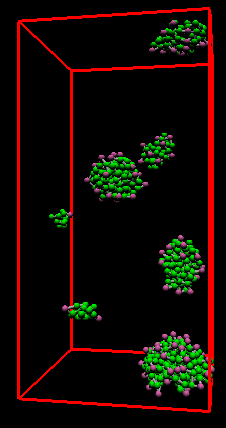

Self-assembly in Surfactant Oligomers:
A Coarse Grained Description through Molecular Dynamics
Prabal K. Maiti, Y. Lansac, M. A. Glaser and N. A. Clark
We have developed a simple microscopic model of surfactant oligomers.
Surfactant oligomers are made up of $x$ ($\ge 2$) single chain
surfactants connected at the level of, or close to, the headgroups by
spacer groups(s). We have studied the formation and morphologies of
supramolecular aggregates of these model surfactant oligomers in aqueous
media by molecular dynamics (MD) simulation. In particular, we have
investigated the effect of degree of oligomerization $x$ on the
self-assembly and diffusivity in bulk. For dimeric surfactants ($x =
2$), simulations exhibit a transition from spherical micelles to
cylindrical micelles with an increase in surfactant concentration. With
further increase in concentration these cylindrical micelles transform
into extremely long `worm-like' or `thread-like' micelles. These
findings are in excellent agrement with experimental results. For
trimeric surfactants ($x = 3$), our simulation results give direct
evidence for the formation of closed-loop micelles at intermediate
concentration. The self-diffusion coefficients of both dimeric and
trimeric surfactant solutions show remarkably similar behavior,
indicating some universality in the behavior of such worm-like micellar
solutions.


c =
0.03
c = 0.056
c =0.08


c = 0.106
c =
0.15
c = 0.19
c =
0.25
c = 0.3

To
see a movie click here
{kind=link}